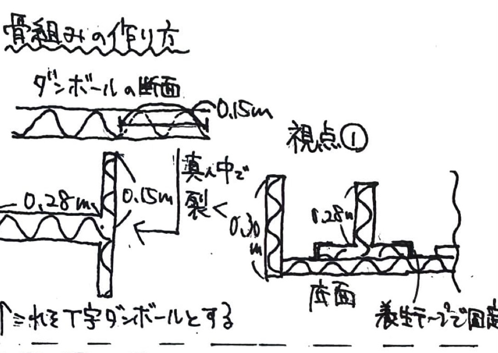
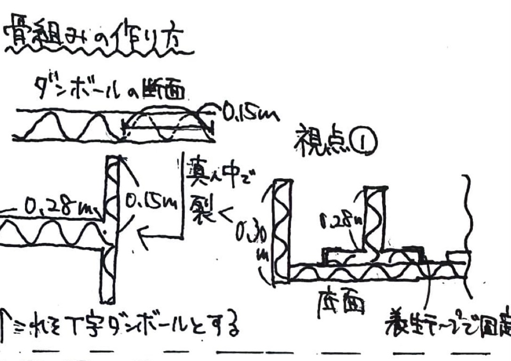
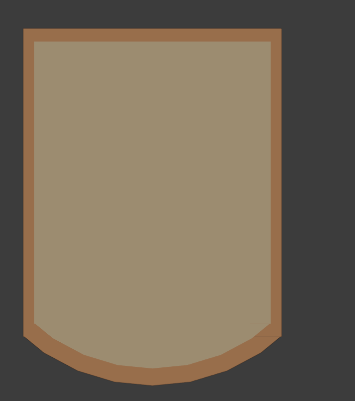
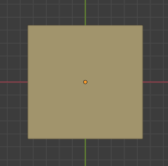

主食用パン(２枚)
完成イメージ
材料
 
ダンボール

ダンボール
| 名前 |
寸法 |
数量 |
| 側面1 |
2.0m * 0.3m |
2 |
| 側面2 |
1.675m * 0.3m |
1 |
T字ダンボール
| 名前 |
寸法 |
数量 |
| T字ダンボール1 |
2.1m * 0.28m |
2 |
| T字ダンボール2 |
2.2m * 0.28m |
2 |
水性絵の具(黄土色、薄茶色、赤茶色)
紙粘土
養生テープ
ハリボテ用
新聞紙
ボンド
広告ボーン
構造
骨組み

作り方
- 底面の大きさにダンボールをパッチワークする
- ダンボール、T字ダンボールを上のように切り出す
- ダンボールを組み合わせる
- ハリボテする
- 黄土色、薄茶色、赤茶色の絵の具をパンの耳用、表面用に混ぜる
- ハリボテした表面に(6)の表面用紙粘土を1cmの厚さでボンドで貼る
- 粘土を薄く伸ばして表面にパンの気泡を作る(歯ブラシなどで叩く、穴を開ける)
- 側面のダンボールに(6)の耳用の紙粘土を2mmの暑さで貼る
ダンボール枠組み
目玉焼き


材料
ダンボール
広告ボーン
針金
新聞紙
紙粘土
ペンキ
ニス
ボンド
- 黄身のダンボールを切る
- 半径20cmのダンボールの円に食パンと同じ要領で貼る
- 上から黄土色のペンキで色を付けながら、ハリボテ
- 半円球(黄身)の中央辺りに広告ボーンをつける
- 白身のもとになる部分をダンボールで切る
- (4)を基準に針金を白身になるように伸ばす
- ハリボテをする
- 食パンに載せ、全体にニスを塗る
バター


材料
ダンボール
広告ボーン
ペンキ
ボンド
ニス
作り方
- ダンボールで箱を作る(中をボーンで補強)
- 黄色に塗る
- ボンドで溶けた厚みを出す(ボンドの中にペンキを混ぜる)
- ニスで溶けた表面を塗る